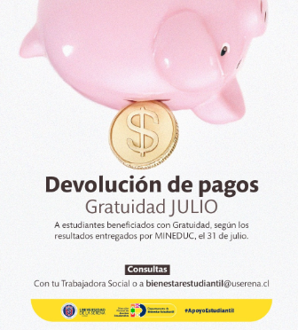

Devolución de pago para alumnos con gratuidad 🤑🎓
📢 Atención estudiantes con gratuidad ULS:
La Universidad de La Serena, a través de la
MINEDUC, informa que se inicia el proceso de devolución según los resultados entregados por MINEDUC el 31 de julio..
👉 Más información en bienestarestudiantil@userena.cl